spark
Table of Contents
- 1 Spark: Cluster Computing with Working Sets
- 2 Resilient Distributed Datasets: A Fault-Tolerant Abstraction for In-Memory Cluster Computing
- 3 An Architecture for Fast and General Data Processing on Large Clusters
- 4 Spark Running Mode
1 Spark: Cluster Computing with Working Sets
1.1 Abstract
- MapReduce and its variants have been highly successful in implementing large-scale data-intensive applications on commodity clusters. However, most of these systems are built around an acyclic data flow model that is not suitable for other popular applications. This paper fo- cuses on one such class of applications: those that reuse a working set of data across multiple parallel operations. This includes many iterative machine learning algorithms, as well as interactive data analysis tools.（迭代计算和交互式分析）
- We propose a new framework called Spark that supports these applica- tions while retaining the scalability and fault tolerance of MapReduce. To achieve these goals, Spark introduces an abstraction called resilient distributed datasets (RDDs). An RDD is a read-only collection of objects partitioned across a set of machines that can be rebuilt if a partition is lost.（RDD是一个只读对象的集合，并且会被分割成为多个partition，分布在多个机器上。如果一个partition丢失的话可以重算这个partition)
- Spark can outperform Hadoop by 10x in iterative machine learning jobs, and can be used to interactively query a 39 GB dataset with sub-second response time.
1.2 Introduction
In this paper, we focus on one such class of applications: those that reuse a working set of data across multiple parallel operations. This includes two use cases where we have seen Hadoop users report that MapReduce is deficient:
- Iterative jobs: Many common machine learning algo- rithms apply a function repeatedly to the same dataset to optimize a parameter (e.g., through gradient de- scent). While each iteration can be expressed as a MapReduce/Dryad job, each job must reload the data from disk, incurring a significant performance penalty.
- Interactive analytics: Hadoop is often used to run ad-hoc exploratory queries on large datasets, through SQL interfaces such as Pig and Hive. Ideally, a user would be able to load a dataset of interest into memory across a number of machines and query it re- peatedly. However, with Hadoop, each query incurs significant latency (tens of seconds) because it runs as a separate MapReduce job and reads data from disk.
- The main abstraction in Spark is that of a resilient dis- tributed dataset (RDD), which represents a read-only col- lection of objects partitioned across a set of machines that can be rebuilt if a partition is lost. Users can explicitly cache an RDD in memory across machines and reuse it in multiple MapReduce-like parallel operations. （RDD可以存储在内存中，并且可以重复使用）
- RDDs achieve fault tolerance through a notion of lineage: if a partition of an RDD is lost, the RDD has enough infor- mation about how it was derived from other RDDs to be able to rebuild just that partition.（RDD通过lineage来达到fault-tolerant. 一个RDD内部包含足够信息来重新构造自己。因为RDD是只读的，所以这个信息只需要是input + sequence of transformatios)
- Although RDDs are not a general shared memory abstraction, they represent a sweet-spot between expressivity on the one hand and scalability and reliability on the other hand, and we have found them well-suited for a variety of applications.
1.3 Programming Model
- To use Spark, developers write a driver program that im- plements the high-level control flow of their application and launches various operations in parallel.
- Spark pro- vides two main abstractions for parallel programming: resilient distributed datasets and parallel operations on these datasets (invoked by passing a function to apply on a dataset).
- In addition, Spark supports two restricted types of shared variables that can be used in functions running on the cluster, which we shall explain later.（共享变量）
1.3.1 Resilient Distributed Datasets (RDDs)
- A resilient distributed dataset (RDD) is a read-only col- lection of objects partitioned across a set of machines that can be rebuilt if a partition is lost.
- The elements of an RDD need not exist in physical storage; instead, a handle to an RDD contains enough information to compute the RDD starting from data in reliable storage. This means that RDDs can always be reconstructed if nodes fail.（每个RDD包含如何从data in reliable storage经过一系列变化转换过来）
- In Spark, each RDD is represented by a Scala object. Spark lets programmers construct RDDs in four ways:（RDD能够通过下面4种方式来构造）
- From a file in a shared file system, such as the Hadoop Distributed File System (HDFS).（从HDFS中读取）
- By “parallelizing” a Scala collection (e.g., an array) in the driver program, which means dividing it into a number of slices that will be sent to multiple nodes.（将driver中的collection切片）
- By transforming an existing RDD. A dataset with ele- ments of type A can be transformed into a dataset with elements of type B using an operation called flatMap, which passes each element through a user-provided function of type A ⇒ List[B]. Other transforma- tions can be expressed using flatMap, including map (pass elements through a function of type A ⇒ B) and filter (pick elements matching a predicate).（经过transformation)
- By changing the persistence of an existing RDD. By default, RDDs are lazy and ephemeral. That is, par- titions of a dataset are materialized on demand when they are used in a parallel operation (e.g., by passing a block of a file through a map function), and are dis- carded from memory after use. However, a user can alter the persistence of an RDD through two actions:
- The cache action leaves the dataset lazy, but hints that it should be kept in memory after the first time it is computed, because it will be reused. We note that our cache action is only a hint: if there is not enough memory in the cluster to cache all partitions of a dataset, Spark will recompute them when they are used. We chose this design so that Spark programs keep work- ing (at reduced performance) if nodes fail or if a dataset is too big. This idea is loosely analogous to virtual memory.(cache可以用来提示将RDD缓存在内存中，以便被后面计算重复使用。如果空间不够的话那么会丢弃而下次需要的时候重新计算，类似虚拟内存）
- The save action evaluates the dataset and writes it to a distributed filesystem such as HDFS. The saved version is used in future operations on it.（save可以用来将RDD持久化到磁盘上）
- We also plan to extend Spark to support other levels of persistence (e.g., in-memory replication across multiple nodes). Our goal is to let users trade off between the cost of storing an RDD, the speed of accessing it, the proba- bility of losing part of it, and the cost of recomputing it.
1.3.2 Parallel Operations
Several parallel operations can be performed on RDDs:
- reduce: Combines dataset elements using an associa- tive function to produce a result at the driver program.
- collect: Sends all elements of the dataset to the driver program. For example, an easy way to update an array in parallel is to parallelize, map and collect the array.
- foreach: Passes each element through a user provided function. This is only done for the side effects of the function (which might be to copy data to another sys- tem or to update a shared variable as explained below).
We note that Spark does not currently support a grouped reduce operation as in MapReduce; reduce re- sults are only collected at one process (the driver). We plan to support grouped reductions in the future using a “shuffle” transformation on distributed datasets, as de- scribed in Section 7.（没有shuffle是显然不行的）
1.3.3 Shared Variables
- Programmers invoke operations like map, filter and re- duce by passing closures (functions) to Spark. As is typi- cal in functional programming, these closures can refer to variables in the scope where they are created. Normally, when Spark runs a closure on a worker node, these vari- ables are copied to the worker.（closure使用的变量会被复制到worker上）
- However, Spark also lets programmers create two restricted types of shared vari- ables to support two simple but common usage patterns:
- Broadcast variables: If a large read-only piece of data (e.g., a lookup table) is used in multiple parallel op- erations, it is preferable to distribute it to the workers only once instead of packaging it with every closure. Spark lets the programmer create a “broadcast vari-able” object that wraps the value and ensures that it is only copied to each worker once.（广播变量，类似Hadoop的distributed cache)
- Accumulators: These are variables that workers can only “add” to using an associative operation, and that only the driver can read. They can be used to im- plement counters as in MapReduce and to provide a more imperative syntax for parallel sums. Accumu- lators can be defined for any type that has an “add” operation and a “zero” value. Due to their “add-only” semantics, they are easy to make fault-tolerant.(累加器，类似Hadoop的counter)
1.4 Examples
1.5 Implementation

1.5.1 RDD
The core of Spark is the implementation of resilient dis- tributed datasets. As an example, suppose that we define a cached dataset called cachedErrs representing error messages in a log file, and that we count its elements us- ing map and reduce, as in Section 3.1:
val file = spark.textFile("hdfs://...") val errs = file.filter(_.contains("ERROR")) val cachedErrs = errs.cache() val ones = cachedErrs.map(_ => 1) val count = ones.reduce(_+_)
These datasets will be stored as a chain of objects cap- turing the lineage of each RDD, shown in Figure 1. Each dataset object contains a pointer to its parent and informa- tion about how the parent was transformed.
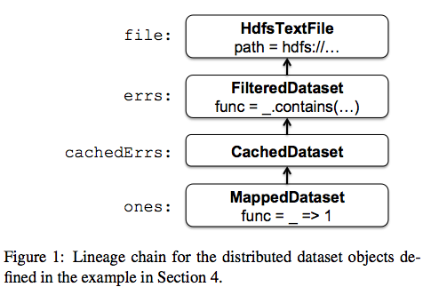
#note: rdd = direct input + function as closure
Internally, each RDD object implements the same sim- ple interface, which consists of three operations:（RDD interface)
- getPartitions, which returns a list of partition IDs.（这个RDD有哪些partitions)
- getIterator(partition), which iterates over a partition.(遍历partition获取数据）
- getPreferredLocations(partition), which is used for task scheduling to achieve data locality.（这个partition存储在哪些地方，这样可以将人任务分发到上面提高data locality)
When a parallel operation is invoked on a dataset, Spark creates a task to process each partition of the dataset and sends these tasks to worker nodes. We try to send each task to one of its preferred locations using a technique called delay scheduling. Once launched on a worker, each task calls getIterator to start reading its partition.(通过将task放置到partition所在的位置称为延迟调度。一旦worker启动之后获取partition的遍历器来读取数据）
The different types of RDDs differ only in how they implement the RDD interface. For example,
- for a Hdfs- TextFile, the partitions are block IDs in HDFS, their pre- ferred locations are the block locations, and getIterator opens a stream to read a block.
- In a MappedDataset, the partitions and preferred locations are the same as for the parent, but the iterator applies the map function to ele- ments of the parent.
- Finally, in a CachedDataset, the getIterator method looks for a locally cached copy of a transformed partition, and each partition’s preferred loca- tions start out equal to the parent’s preferred locations, but get updated after the partition is cached on some node to prefer reusing that node.
This design makes faults easy to handle: if a node fails, its partitions are re-read from their parent datasets and eventually cached on other nodes.
Finally, shipping tasks to workers requires shipping closures to them—both the closures used to define a dis- tributed dataset, and closures passed to operations such as reduce. To achieve this, we rely on the fact that Scala clo- sures are Java objects and can be serialized using Java se- rialization; this is a feature of Scala that makes it relatively straightforward to send a computation to another machine. Scala’s built-in closure implementation is not ideal, how- ever, because we have found cases where a closure object references variables in the closure’s outer scope that are not actually used in its body. We have filed a bug report about this, but in the meantime, we have solved the issue by performing a static analysis of closure classes’ byte- code to detect these unused variables and set the corre- sponding fields in the closure object to null. We omit the details of this analysis due to lack of space.（通过对closure做序列化将task散布到worker上面）
1.5.2 Shared Variables
The two types of shared variables in Spark, broadcast variables and accumulators, are imple- mented using classes with custom serialization formats.
- When one creates a broadcast variable b with a value v, v is saved to a file in a shared file system. The serialized form of b is a path to this file. When b’s value is queried on a worker node, Spark first checks whether v is in a local cache, and reads it from the file system if it isn’t. We initially used HDFS to broadcast variables, but we are developing a more efficient streaming broadcast system.（将HDFS当作共享文件系统，广播数据存储在HDFS上面，而广播变量就是HDFS的文件路径）
- Accumulators are implemented using a different “se- rialization trick.” Each accumulator is given a unique ID when it is created. When the accumulator is saved, its serialized form contains its ID and the “zero” value for its type. On the workers, a separate copy of the accu- mulator is created for each thread that runs a task using thread-local variables, and is reset to zero when a task be- gins. After each task runs, the worker sends a message to the driver program containing the updates it made to var- ious accumulators. The driver applies updates from each partition of each operation only once to prevent double- counting when tasks are re-executed due to failures.（累加器变量由driver分配ID，然后各个worker汇报在自己在这个ID上的增量）
1.5.3 Interpret Intergation
1.6 Results
- Distributed Shared Memory
- Cluster Computing Frameworks
- Language Integration
- Lineage
1.7 Related Work
1.8 Discussion and Future Work
In future work, we plan to focus on four areas:
- Formally characterize the properties of RDDs and Spark’s other abstractions, and their suitability for var- ious classes of applications and workloads.
- Enhance the RDD abstraction to allow programmers to trade between storage cost and re-construction cost.
- Define new operations to transform RDDs, including a “shuffle” operation that repartitions an RDD by a given key. Such an operation would allow us to im- plement group-bys and joins.
- Provide higher-level interactive interfaces on top of the Spark interpreter, such as SQL and R shells.
2 Resilient Distributed Datasets: A Fault-Tolerant Abstraction for In-Memory Cluster Computing
2.1 Abstract
- We present Resilient Distributed Datasets (RDDs), a dis- tributed memory abstraction that lets programmers per- form in-memory computations on large clusters in a fault-tolerant manner.
- RDDs are motivated by two types of applications that current computing frameworks han- dle inefficiently: iterative algorithms and interactive data mining tools.
- In both cases, keeping data in memory can improve performance by an order of magnitude. To achieve fault tolerance efficiently, RDDs provide a restricted form of shared memory, based on coarse- grained transformations rather than fine-grained updates to shared state.
- However, we show that RDDs are expres- sive enough to capture a wide class of computations, in- cluding recent specialized programming models for iter- ative jobs, such as Pregel, and new applications that these models do not capture.
2.2 Introduction
- Although current frameworks provide numerous ab- stractions for accessing a cluster’s computational re- sources, they lack abstractions for leveraging distributed memory. This makes them inefficient for an important class of emerging applications: those that reuse interme- diate results across multiple computations.（缺少有效使用分布式内存的抽象）
- Data reuse is common in many iterative machine learning and graph algorithms, including PageRank, K-means clustering, and logistic regression. Another compelling use case is interactive data mining, where a user runs multiple ad- hoc queries on the same subset of the data.
- Unfortu- nately, in most current frameworks, the only way to reuse data between computations (e.g., between two MapRe- duce jobs) is to write it to an external stable storage sys- tem, e.g., a distributed file system. This incurs substantial overheads due to data replication, disk I/O, and serializa-tion, which can dominate application execution times.（而现在对于数据的重用都是依赖于外部持久化系统比如分布式文件系统，data replication, disk I/O, 序列化都带来比较大的overhead)
- Recognizing this problem, researchers have developed specialized frameworks for some applications that re- quire data reuse. For example, Pregel is a system for iterative graph computations that keeps intermediate data in memory, while HaLoop offers an iterative MapRe- duce interface. However, these frameworks only support specific computation patterns (e.g., looping a series of MapReduce steps), and perform data sharing implicitly for these patterns. They do not provide abstractions for more general reuse, e.g., to let a user load several datasets into memory and run ad-hoc queries across them.
- In this paper, we propose a new abstraction called re- silient distributed datasets (RDDs) that enables efficient data reuse in a broad range of applications. RDDs are
- fault-tolerant,
- parallel data structures that let users ex- plicitly persist intermediate results in memory,
- control their partitioning to optimize data placement,
- and ma-nipulate them using a rich set of operators.
- The main challenge in designing RDDs is defining a programming interface that can provide fault tolerance efficiently.
- Existing abstractions for in-memory storage on clusters, such as distributed shared memory, key- value stores, databases, and Piccolo, offer an interface based on fine-grained updates to mutable state (e.g., cells in a table). With this interface, the only ways to provide fault tolerance are to replicate the data across machines or to log updates across machines. Both ap- proaches are expensive for data-intensive workloads, as they require copying large amounts of data over the clus- ter network, whose bandwidth is far lower than that of RAM, and they incur substantial storage overhead.（允许细粒度地来更新状态，所以应对failover的实现办法只能够是replication)
- In contrast to these systems, RDDs provide an inter- face based on coarse-grained transformations (e.g., map, filter and join) that apply the same operation to many data items. This allows them to efficiently provide fault tolerance by logging the transformations used to build a dataset (its lineage) rather than the actual data. If a parti- tion of an RDD is lost, the RDD has enough information about how it was derived from other RDDs to recompute just that partition. Thus, lost data can be recovered, often quite quickly, without requiring costly replication.(而RDD只允许粗粒度地更新状态，所以可以通过重算来处理failover)
- Although an interface based on coarse-grained trans- formations may at first seem limited, RDDs are a good fit for many parallel applications, because these appli- cations naturally apply the same operation to multiple data items. Indeed, we show that RDDs can efficiently express many cluster programming models that have so far been proposed as separate systems.
2.3 Resilient Distributed Datasets (RDDs)
2.3.1 RDD Abstraction
- Formally, an RDD is a read-only, partitioned collection of records. RDDs can only be created through determin- istic operations on either (1) data in stable storage or (2) other RDDs. We call these operations transformations to differentiate them from other operations on RDDs. Ex- amples of transformations include map, filter, and join.
- RDDs do not need to be materialized at all times. In- stead, an RDD has enough information about how it was derived from other datasets (its lineage) to compute its partitions from data in stable storage. This is a power- ful property: in essence, a program cannot reference an RDD that it cannot reconstruct after a failure.
- Finally, users can control two other aspects of RDDs: persistence and partitioning. Users can indicate which RDDs they will reuse and choose a storage strategy for them (e.g., in-memory storage). They can also ask that an RDD’s elements be partitioned across machines based on a key in each record. This is useful for placement op- timizations, such as ensuring that two datasets that will be joined together are hash-partitioned in the same way.(用户可以控制持久化以及分片策略）
2.3.2 Spark Programming Interface
2.3.3 Advantages of the RDD Model
- The main difference between RDDs and DSM is that RDDs can only be created (“written”) through coarse- grained transformations, while DSM allows reads and writes to each memory location. This restricts RDDs to applications that perform bulk writes, but allows for more efficient fault tolerance. In particular, RDDs do not need to incur the overhead of checkpointing, as they can be recovered using lineage. Furthermore, only the lost partitions of an RDD need to be recomputed upon fail- ure, and they can be recomputed in parallel on different nodes, without having to roll back the whole program.
- A second benefit of RDDs is that their immutable na- ture lets a system mitigate slow nodes (stragglers) by run- ning backup copies of slow tasks as in MapReduce. Backup tasks would be hard to implement with DSM, as the two copies of a task would access the same memory locations and interfere with each other’s updates. （可以很容易地复制计算单元，来处理出现straggler的情况）
- Finally, RDDs provide two other benefits over DSM. First, in bulk operations on RDDs, a runtime can sched-ule tasks based on data locality to improve performance. Second, RDDs degrade gracefully when there is not enough memory to store them, as long as they are only being used in scan-based operations. Partitions that do not fit in RAM can be stored on disk and will provide similar performance to current data-parallel systems.
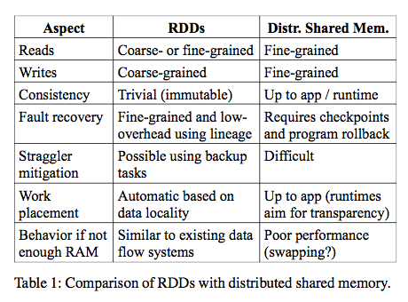
2.4 Spark Programming Interface
To use Spark, developers write a driver program that connects to a cluster of workers, as shown in Figure 2. The driver defines one or more RDDs and invokes ac- tions on them. Spark code on the driver also tracks the RDDs’ lineage. The workers are long-lived processes that can store RDD partitions in RAM across operations.
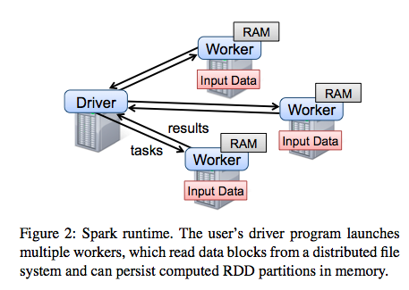
2.4.1 RDD Operations in Spark
Table 2 lists the main RDD transformations and actions available in Spark. We give the signature of each oper- ation, showing type parameters in square brackets. Re- call that transformations are lazy operations that define a new RDD, while actions launch a computation to return a value to the program or write data to external storage.
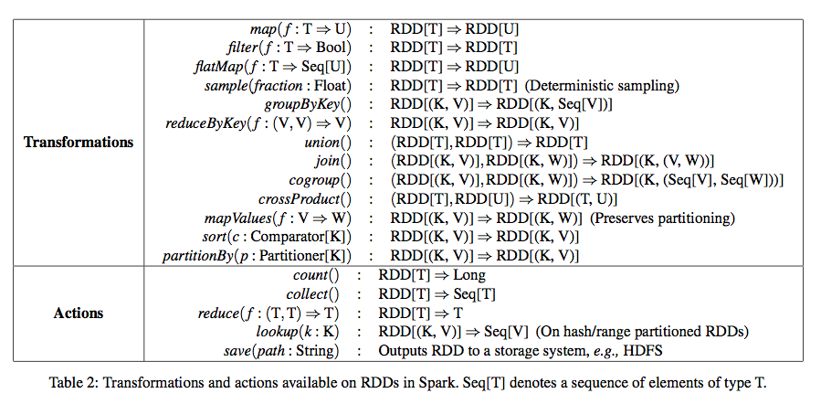
2.5 Representing RDDs
One of the challenges in providing RDDs as an abstrac- tion is choosing a representation for them that can track lineage across a wide range of transformations. Ideally, a system implementing RDDs should provide as rich a set of transformation operators as possible (e.g., the ones in Table 2), and let users compose them in arbitrary ways. We propose a simple graph-based representation for RDDs that facilitates these goals. We have used this representation in Spark to support a wide range of trans- formations without adding special logic to the scheduler for each one, which greatly simplified the system design.
In a nutshell, we propose representing each RDD through a common interface that exposes five pieces of information: a set of partitions, which are atomic pieces of the dataset; a set of dependencies on parent RDDs; a function for computing the dataset based on its par- ents; and metadata about its partitioning scheme and data placement.
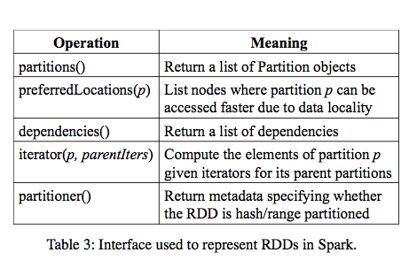
For example, an RDD representing an HDFS file has a partition for each block of the file and knows which machines each block is on. Meanwhile, the result of a map on this RDD has the same partitions, but applies the map function to the parent’s data when computing its elements.
The most interesting question in designing this inter- face is how to represent dependencies between RDDs. We found it both sufficient and useful to classify depen- dencies into two types:
- narrow dependencies(ND), where each partition of the parent RDD is used by at most one parti- tion of the child RDD, （一个partition只会被child RDD中的一个partition所使用）
- wide dependencies(WD), where multi- ple child partitions may depend on it.（一个partition会被child RDD中的多个partition所使用）
For example, map leads to a narrow dependency, while join leads to to wide dependencies (unless the parents are hash-partitioned). Figure 4 shows other examples.
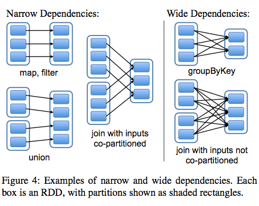
This distinction is useful for two reasons.
- First, narrow dependencies allow for pipelined execution on one clus- ter node, which can compute all the parent partitions. For example, one can apply a map followed by a filter on an element-by-element basis. In contrast, wide dependen- cies require data from all parent partitions to be available and to be shuffled across the nodes using a MapReduce- like operation. (ND的结果RDD，每个partition在单个节点上面使用pipeline方式完成，各个partition的计算可以完全parallel. 而WD的结果RDD则需要parent RDD全部计算完成才能够计算）
- Second, recovery after a node failure is more efficient with a narrow dependency, as only the lost parent partitions need to be recomputed, and they can be recomputed in parallel on different nodes. In contrast, in a lineage graph with wide dependencies, a single failed node might cause the loss of some partition from all the ancestors of an RDD, requiring a complete re-execution.（ND比较容易recover只需要重新计算对应的parent RDD partition即可，而WD的recovery相对困难是因为需要从所有的parent RDD partition获取数据）
This common interface for RDDs made it possible to implement most transformations in Spark in less than 20 lines of code. Indeed, even new Spark users have imple- mented new transformations (e.g., sampling and various types of joins) without knowing the details of the sched- uler. We sketch some RDD implementations below.
- HDFS files: The input RDDs in our samples have been files in HDFS. For these RDDs, partitions returns one partition for each block of the file (with the block’s offset stored in each Partition object), preferredLocations gives the nodes the block is on, and iterator reads the block.
- map: Calling map on any RDD returns a MappedRDD object. This object has the same partitions and preferred locations as its parent, but applies the function passed to map to the parent’s records in its iterator method.
- union: Calling union on two RDDs returns an RDD whose partitions are the union of those of the parents. Each child partition is computed through a narrow de- pendency on the corresponding parent.
- sample: Sampling is similar to mapping, except that the RDD stores a random number generator seed for each partition to deterministically sample parent records.
- join: Joining two RDDs may lead to either two nar- row dependencies (if they are both hash/range partitioned with the same partitioner), two wide dependencies, or a mix (if one parent has a partitioner and one does not). In either case, the output RDD has a partitioner (either one inherited from the parents or a default hash partitioner).
这里我们使用spark-1.4.1运行一个例子, 来看看RDD中的这些概念. 首先我们用hdfs中读取一个文本文件上来, 指定分区数量为10.
scala> val rdd = sc.textFile("hdfs://192.168.3.3:8020/tmp/spark.org", 10)
15/09/11 16:53:21 INFO MemoryStore: ensureFreeSpace(231336) called with curMem=758866, maxMem=278302556
15/09/11 16:53:21 INFO MemoryStore: Block broadcast_12 stored as values in memory (estimated size 225.9 KB, free 264.5 MB)
15/09/11 16:53:21 INFO MemoryStore: ensureFreeSpace(19877) called with curMem=990202, maxMem=278302556
15/09/11 16:53:21 INFO MemoryStore: Block broadcast_12_piece0 stored as bytes in memory (estimated size 19.4 KB, free 264.4 MB)
15/09/11 16:53:21 INFO BlockManagerInfo: Added broadcast_12_piece0 in memory on 192.168.3.3:54538 (size: 19.4 KB, free: 265.3 MB)
15/09/11 16:53:21 INFO SparkContext: Created broadcast 12 from textFile at <console>:24
rdd: org.apache.spark.rdd.RDD[String] = MapPartitionsRDD[20] at textFile at <console>:24
然后我们可以查看这个rdd的partitions信息.
scala> rdd.partitions.size 15/09/11 16:53:42 INFO FileInputFormat: Total input paths to process : 1 res42: Int = 10 scala> rdd.partitions res43: Array[org.apache.spark.Partition] = Array(org.apache.spark.rdd.HadoopPartition@99c, org.apache.spark.rdd.HadoopPartition@99d, org.apache.spark.rdd.HadoopPartition@99e, org.apache.spark.rdd.HadoopPartition@99f, org.apache.spark.rdd.HadoopPartition@9a0, org.apache.spark.rdd.HadoopPartition@9a1, org.apache.spark.rdd.HadoopPartition@9a2, org.apache.spark.rdd.HadoopPartition@9a3, org.apache.spark.rdd.HadoopPartition@9a4, org.apache.spark.rdd.HadoopPartition@9a5) scala> rdd.partitions(0).index res44: Int = 0
我们尝试找到这个rdd的HadoopRDD来看看它的preferredLocations. 可以看到这里Dependency是OneToOne, 也就是Narrow Dependency. paritioner为None, 表示使用默认分区函数
scala> rdd.dependencies res45: Seq[org.apache.spark.Dependency[_]] = List(org.apache.spark.OneToOneDependency@4fec36f6) scala> rdd.dependencies(0) res46: org.apache.spark.Dependency[_] = org.apache.spark.OneToOneDependency@4fec36f6 scala> val hdfs = rdd.dependencies(0).rdd hdfs: org.apache.spark.rdd.RDD[_] = hdfs://192.168.3.3:8020/tmp/spark.org HadoopRDD[19] at textFile at <console>:24 scala> hdfs.preferredLocations(hdfs.partitions(0)) res47: Seq[String] = ListBuffer() scala> hdfs.partitioner res48: Option[org.apache.spark.Partitioner] = None
2.6 Implementation
We have implemented Spark in about 14,000 lines of Scala. The system runs over the Mesos cluster man- ager, allowing it to share resources with Hadoop, MPI and other applications. Each Spark program runs as a separate Mesos application, with its own driver (mas- ter) and workers, and resource sharing between these ap- plications is handled by Mesos. Spark can read data from any Hadoop input source (e.g., HDFS or HBase) using Hadoop’s existing input plugin APIs, and runs on an unmodified version of Scala.
2.6.1 Job Scheduling
Overall, our scheduler is similar to Dryad’s, but it additionally takes into account which partitions of per-sistent RDDs are available in memory. Whenever a user runs an action (e.g., count or save) on an RDD, the sched- uler examines that RDD’s lineage graph to build a DAG of stages to execute, as illustrated in Figure 5. Each stage contains as many pipelined transformations with narrow dependencies as possible. The boundaries of the stages are the shuffle operations required for wide dependen- cies, or any already computed partitions that can short- circuit the computation of a parent RDD. The scheduler then launches tasks to compute missing partitions from each stage until it has computed the target RDD.（wild dependencies是每个stage的边界，stage内部都是narrow dependencies)
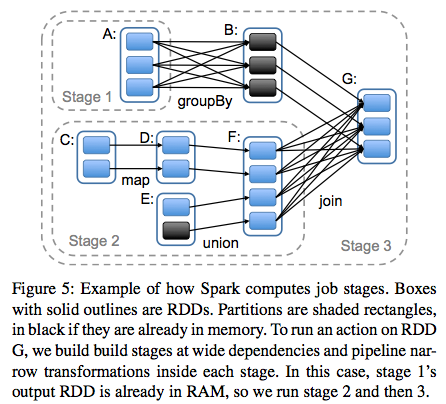
Our scheduler assigns tasks to machines based on data locality using delay scheduling. If a task needs to process a partition that is available in memory on a node, we send it to that node. Otherwise, if a task processes a partition for which the containing RDD provides pre- ferred locations (e.g., an HDFS file), we send it to those.(所谓的lazy scheduling是等待RDD确定位置之后，根据输入RDD partition的位置，将task移动到对应的位置上）
For wide dependencies (i.e., shuffle dependencies), we currently materialize intermediate records on the nodes holding parent partitions to simplify fault recovery, much like MapReduce materializes map outputs.If a task fails, we re-run it on another node as long as its stage’s parents are still available. If some stages have become unavailable (e.g., because an output from the “map side” of a shuffle was lost), we resubmit tasks to compute the missing partitions in parallel. We do not yet tolerate scheduler failures , though replicating the RDD lineage graph would be straightforward.（什么是scheduler failures? 现在在wide dependencies阶段都会对parent partitions进行物化，来节省recovery cost. 对于stage内部的话如果某个部分RDD存在的话，那么就会resuse, 否则触发重新计算的逻辑）
2.6.2 Interpreter Integration
- Scala includes an interactive shell similar to those of Ruby and Python. Given the low latencies attained with in-memory data, we wanted to let users run Spark inter- actively from the interpreter to query big datasets.
- The Scala interpreter normally operates by compiling a class for each line typed by the user, loading it into the JVM, and invoking a function on it. This class in- cludes a singleton object that contains the variables or functions on that line and runs the line’s code in an ini- tialize method. For example, if the user types var x = 5 followed by println(x), the interpreter defines a class called Line1 containing x and causes the second line to compile to println(Line1.getInstance().x).（这是scala REPL实现原理？）
We made two changes to the interpreter in Spark:
- Class shipping: To let the worker nodes fetch the bytecode for the classes created on each line, we made the interpreter serve these classes over HTTP.（通过HTTP来实现class的分发）
- Modified code generation: Normally, the singleton object created for each line of code is accessed through a static method on its corresponding class. This means that when we serialize a closure refer- encing a variable defined on a previous line, such as Line1.x in the example above, Java will not trace through the object graph to ship the Line1 instance wrapping around x. Therefore, the worker nodes will not receive x. We modified the code generation logic to reference the instance of each line object directly.
Figure 6 shows how the interpreter translates a set of lines typed by the user to Java objects after our changes. （修改生成代码确保closure所引用的所有变量都会被包含）
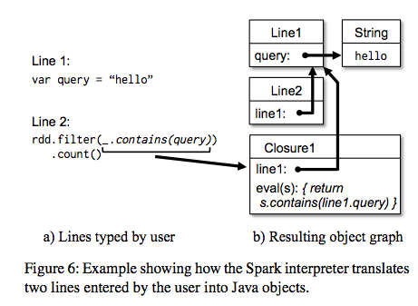
2.6.3 Memory Management
Spark provides three options for storage of persistent RDDs:
- in-memory storage as deserialized Java objects, The first option provides the fastest performance, because the Java VM can access each RDD element natively.
- in-memory storage as serialized data, The second option lets users choose a more memory-efficient representation than Java object graphs when space is limited, at the cost of lower performance.
- and on-disk stor- age. The third option is useful for RDDs that are too large to keep in RAM but costly to recompute on each use.
To manage the limited memory available, we use an LRU eviction policy at the level of RDDs. When a new RDD partition is computed but there is not enough space to store it, we evict a partition from the least recently ac- cessed RDD, unless this is the same RDD as the one with the new partition. In that case, we keep the old partition in memory to prevent cycling partitions from the same RDD in and out. This is important because most oper- ations will run tasks over an entire RDD, so it is quite likely that the partition already in memory will be needed in the future. We found this default policy to work well in all our applications so far, but we also give users further control via a “persistence priority” for each RDD.(内存管理使用LRU淘汰策略。注意一个RDD partition不会触发相同RDD的其他partition被evicted，这点应该是比较实际的需求）
Finally, each instance of Spark on a cluster currently has its own separate memory space. In future work, we plan to investigate sharing RDDs across instances of Spark through a unified memory manager. # Tachyon分布式内存文件系统?
2.6.4 Support for Checkpointing
- Although lineage can always be used to recover RDDs after a failure, such recovery may be time-consuming for RDDs with long lineage chains. Thus, it can be helpful to checkpoint some RDDs to stable storage.
- In general, checkpointing is useful for RDDs with long lineage graphs containing wide dependencies. In contrast, for RDDs with narrow dependencies on data in stable storage, checkpointing may never be worthwhile. If a node fails, lost partitions from these RDDs can be recomputed in parallel on other nodes, at a fraction of the cost of replicating the whole RDD.（只是针对wide dependencies做checkpoint)
- Spark currently provides an API for checkpointing (a REPLICATE flag to persist), but leaves the decision of which data to checkpoint to the user. However, we are also investigating how to perform automatic checkpoint- ing. Because our scheduler knows the size of each dataset as well as the time it took to first compute it, it should be able to select an optimal set of RDDs to checkpoint to minimize system recovery time.(也提供API允许用户来做checkpoint)
- Finally, note that the read-only nature of RDDs makes them simpler to checkpoint than general shared mem- ory. Because consistency is not a concern, RDDs can be written out in the background without requiring program pauses or distributed snapshot schemes.(因为RDD是完全只读的，所以RDD的checkpoint实现上比DSM的要简单不少，不需要像DSM一样需要做比较复杂的协调和控制时序）
2.7 Evaluaion
2.8 Discussion
2.9 Related Work
2.10 Conclusion
3 An Architecture for Fast and General Data Processing on Large Clusters
Matei的博士论文. 我看的是CSDN众包翻译版本 https://code.csdn.net/CODE_Translation/spark_matei_phd.
高效率的数据共享机制
我们的工作源于观察到很多数据流模型不适用的应用场景所共有的一个特征: 在计算过程中都需要高效率的 数据共享 。例如,迭代算法,如 PageRank, K-means 聚类,或逻辑回归,都需要进行多次访问相同的数据集;交互数据挖掘经常需要对于同一数据子集进行多个特定的查询;而流式应用下则需要随时间对状态信息进行维护和共享。不幸的是,尽管数据流框架支持大量的计算操作运算,但是它们缺乏针对数据共享的高效原语。在这些框架中, 实现计算之间(例如,两个的 MapReduce 作业之间)数据共享只有一个办法,就是将其写到一个稳定的外部存储系统,如分布式文件系统。这会引入数据备份、磁盘 I/O 以及序列化,这些都会引起大量的开销,从而占据大部分的应用执行时间。
事实上,在针对这些新应用而定制的框架进行研究的过程中,我们的确有发现它们会对数据共享进行优化。例如,Pregel是一种针对图迭代计算的系统,它会将中间状态保存在内存中。而 HaLoop是一种迭代 MapReduce 的系统,它会在各步骤中都以一种高效率的方式对数据进行分区。不幸的是,这些框架只能支持特定的计算模式( 例如 ,循环一系列的 MapReduce 的步骤),并对用户屏蔽了数据共享的方式。它们不能提供一种更为通用的抽象模式, 例如 ,允许一个用户可以加载几个数据集到内存中并进行一些跨数据集的即时查询。
现有的基于集群的内存存储抽象,比如分布式共享内存,键-值存储,数据库,以及 Piccolo,提供了一个对内部状态基于细粒度更新的接口( 例如, 表格里面的单元).在这样的设计之下,提供容错性的方法就要么是在主机之间复制数据,要么对各主机的更新情况做日志记录。这两种方法对于数据密集型的任务来说代价很高,因为它们需要在带宽远低于内存的集群网络间拷贝大量的数据,同时还将产生大量的存储开销。
不适合RDD的应用
RDDS 不太适用于通过异步细粒度更新来共享状态的应用,比如针对 Web 应用或增量网络爬虫的存储系统。对于这些应用,那些传统的更新日志和数据检查点的系统会更有效,例如数据库,RAMCloud, Percolator 和 Piccolo 。我们的目标是为批量分析提供一个高效的编程模型,这些异步应用仍然交由定制系统来处理。但是,第 5 章会提供一些把这些类型的应用与 RDD 模型结合起来的可能方法,比如批量更新。
解释RDD表达能力
为什么 RDD 能够表达这些不同的编程模型?原因就是 RDD 上的限制在许多并行应用程序中影响非常小。其原因在于,虽然 RDD 仅能通过批量变换来创建,但众多的并行程序本质上都是对多条记录执行相同的操作 ,而这点便使得它们易于表达。另外,RDD 的不变性也不会影响其表达,因为相同数据集的各个不同版本可以通过多个对应的 RDD 来表示。事实上,大多数当前的MapReduce 应用所基于的文件系统,比如 HDFS,并不允许更新文件(译注:记录只能创建或删除,而不能修改)。在后续章节(3 和 5)中,我们会对 RDD 表达进行更为详细的阐述。最后一个问题是,为什么之前的框架没有提供相同级别的通用性呢?我们认为,这是由于这些系统仅关注在 MapReduce 和 Dryad 所不擅长的特定问题上,比如迭代,而未能发现这些问题均是因为缺乏对数据共享的抽象。
集群应用资源瓶颈
虽然集群应用是多种多样的,但是它们都受到相同的底层硬件的限制。目前的数据中心有一个非常不合理的存储层次结构,这将会因相同的原因限制大多数应用。例如,现在一个典型的数据中心可能有以下硬件特性:
- 每个节点的本地内存大约有 50 GB / s 的内存带宽以及多个磁盘(通常在 Hadoop 集群中为 12-24)
- 也就是说,假设有 20 个磁盘,每个磁盘带宽 100 MB/s,那么将意味着本地存储带宽约为 2 GB/s。
- 每个节点都有一个 10 Gbps (1.3 GB/s) 的网络输出带宽,大约比内存带宽小 40 倍,比它的磁盘总带宽小 2 倍。
- 20-40 台机器节点组成机架,机架间的带宽为 20-40 Gbps,这比机架内部的网络性能要低 10 倍。
鉴于这些特性,许多应用所关心的最重要的性能指标就是控制网络布局和通信。
经验总结
数据共享的重要性。我们工作的基本主线是数据共享对于性能的重要性,数据共享无论是对单一模式的计算( 例如, 迭代算法或数据流作业)应用,还是多种计算模式交错的应用都非常重要。特别是对于“大数据”的应用程序,数据集迁移代价是非常高的,所以对应用开发者来说,有效共享是很关键的。然而,以前的系统大多集中在实现特定的数据流模式,而 RDDs 使数,同时其足够据集成为一等原语,为用户提供了足够的机制来控制其属性( 例如, 分区和持久性)抽象的接口能够自动提供容错功能。 由于每台机器的网络带宽,存储带宽和计算能力之间的差异,我们认为数据共享在大多数分布式应用中,仍备受关注,并行处理平台仍将需要解决这一问题。
在共享环境中衡量性能,而不是基于单一应用。虽然针对特定应用的进行执行引擎优化是有益的,但我们所得到的另一个总结是,现实中的部署往往是比较复杂的,而在这些复杂的设置中衡量性能则是最重要的。特别是:
- 大多数工作流程会结合不同形式的处理,例如,使用 MapReduce 解析一个日志文件,然后在其上运行一个机器学习算法。
- 大多数部署会在多个应用之间共享 ,需要执行引擎能够动态资源共享、撤销和重执行。
例如,假设一个机器学习算法的专门实现,使用一个像MPI的这样的执行模型(在整个应用运行过程中资源是静态分配的),比Spark 执行快上 5 倍。然而在一个端到端的工作流程中这样的专有系统仍然会比较慢,这个流程包括使用MapReduce脚本的解析数据文件,然后运行学习算法。为了衔接这两个过程,将会需要把解析所得的数据集额外输出到一个可靠的存储系统中,从而来实现系统之间的共享。并且在一个多用户集群中,专有系统需要预先为应用选择一个固定的分配,这或将导致应用出现排队状况,又或是没有充分利用资源,并且与RDDs这样的细粒度执行模式相比,降低了集群中的所有用户的响应能力。 我们认为,由于观点和上面所说的第一个经验相同(数据迁移比较昂贵)集群将会被动态地分享,这需要应用横向或是纵向积极地扩展以及轮流访问每个节点上的数据。在这些环境中,我们认为计算机系统将不得不为了这样的共享应用而进行 优化 ,从而在大多数部署中获得一定的性能优势。
瓶颈优化相当重要。一个有趣的经验是,如何设计通用处理引擎还要看瓶颈在哪里。在很多情况下,一些资源最终限制了整个应用的性能,所以给用户优化这些资源的控制力能够得到良好的性能。例如,当 Cloudera 发布 Impala SQL 引擎时,伯克利 AMPLab 发现,与 Shark 相比,在许多查询中,性能几乎相同。这是为什么呢?这些查询要么是 I/O,要么是网络瓶颈,这两个系统都使可用带宽达到了饱和。这是一个有趣的方法来处理通用性问题,因为这意味着一般不需要低级抽象。例如,RDDs 通过控制分区给用户优化网络使用(最常见的瓶颈)的能力。但是,他们是使用通用的模式来做到这一点的( 例如, 分区),而不需要用户手动选择哪台机器上的每块数据,因此可以自动处理再平衡和容错能力。
4 Spark Running Mode
spark整体架构如下图:
- driver progam # 客户端. 在这里创建sparkcontext, 然后提交任务到cluster上
- cluster manager # master节点. 当然这里也可能包括其他资源管理系统比如mesos或yarn.
- worker node # worker节点. 在上面会启动executor, 每个executor则会启动多个task. 一个task对应a action on a partition.
根据spark文档中Cluster Mode Overview 一节描述, 共有下面几种运行方式
- local # 本地模式. master, worker都在一个JVM中.
- local cluster # 本地机群模式. master, worker在一个机器上, 但是是不同的JVM
- standalone # 独立机群模式. master做资源管理和状态收集.
- mesos # 借助mesos来做资源管理
- yarn cluster # 借助yarn来做资源管理. driver program运行在yarn集群上
- yarn client # 和上面不同的是driver program运行在客户本地.
这些运行方法内部实现原理非常类似. 先看看local cluster和standalone.(因为local将所有东西放在一个JVM里面, 所以许多组件都被省略)
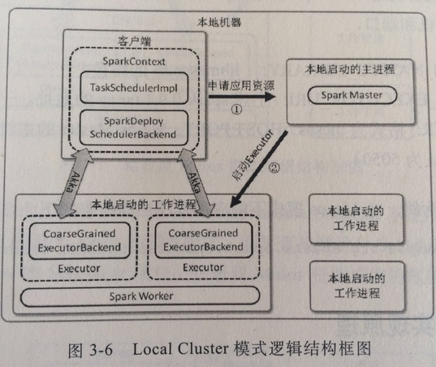
standalone完全一样. 每个worker/executor上运行一个CoarseGrainedExecutorBackend和driver进行通信. driver对应组件是SparkDeploySchedulerBackend, 双方使用Akka来做通信. TaskSchedulerImpl管理整个DAG如何拆分成为tasks以及这些task按照什么顺序执行. task会被序列化发送到executor上, executor反序列化task然后执行, 执行完成后汇报给driver. driver从matser上申请资源, 然后master会在worker上启动executor来提供执行资源. driver还会向master汇报状态.
这里顺带说一下spark是如何评估应用使用资源的. spark应用资源申请是以core为单位的(spark.cores.max). 集群启动时worker会检查这个机器有多少core, 然后汇报给master. 同时我们也需要配置每个executor占用多少core(spark.executor.cores). 这样spark在提交应用时候就知道这个应用会使用多少core以及使用多少executor
mesos模式分为粗细两种粒度. 粗粒度和local cluster/standalone一样. 应用程序开始便申请executor, 如果没有足够资源不启动. 期间资源完全占据, 直到应用退出executor资源才会归还. 而细粒度则不通, 只要集群中有一些资源给部分executor的话, 那么应用程序就会开始执行任务(task). 任务执行完成之后, 那么executor资源就会归还. 粗粒度是以app/job作为分配单元的, 而细粒度是以task作为分配单元的. 这里的tradeoff是资源使用率以及调度带来的开销.
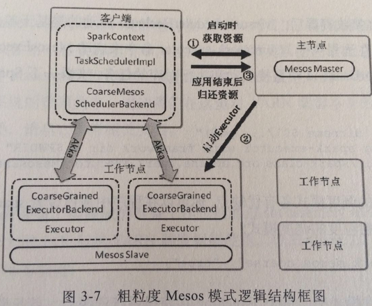 
对于yarn来说只有粗粒度模式. cluster/client在启动executor细节上有所差异. cluster模式中因为driver已经运行在NM上所以可以直接启动其他NM上的executors, 而client必须委托一个NM来创建executors.
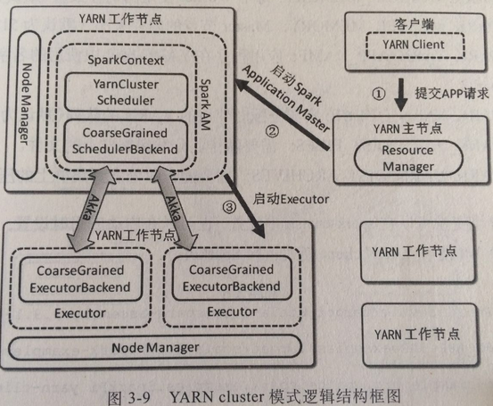 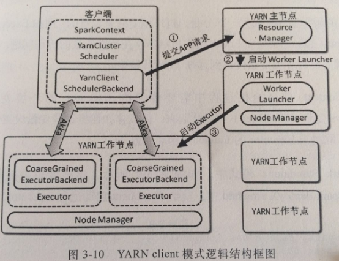